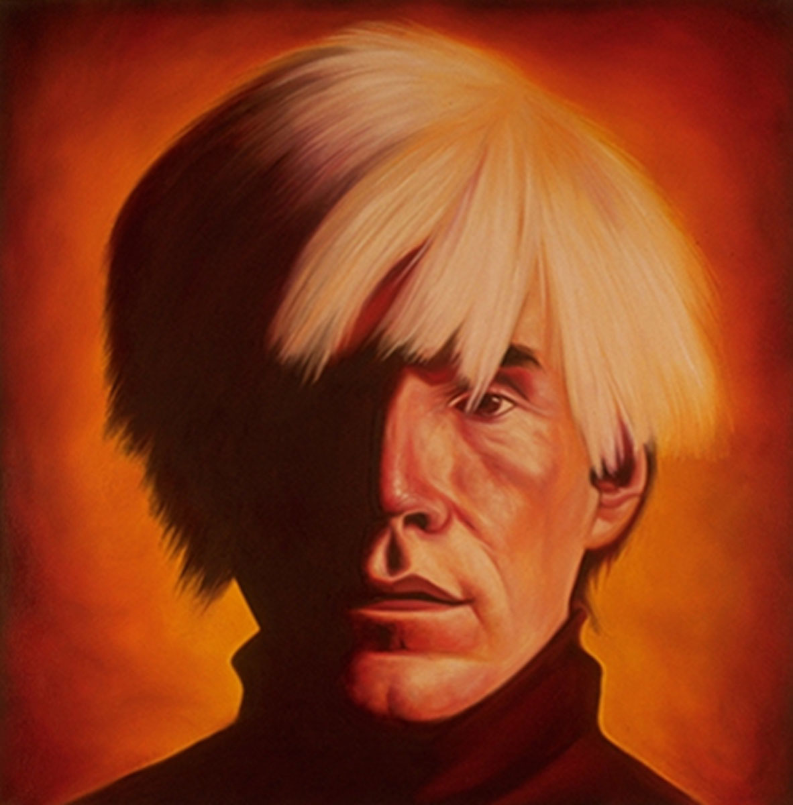
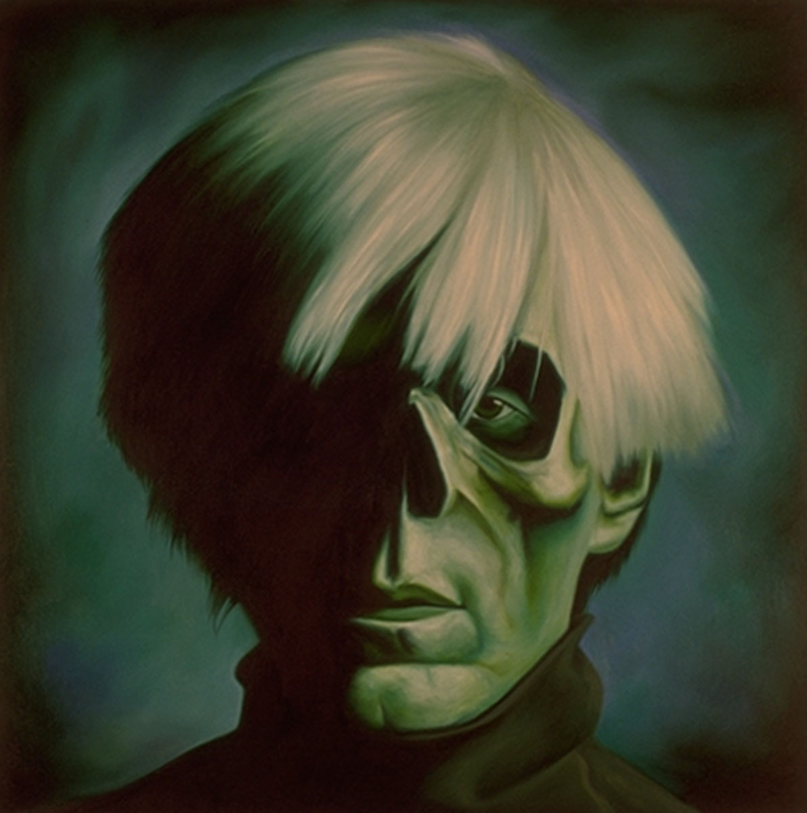
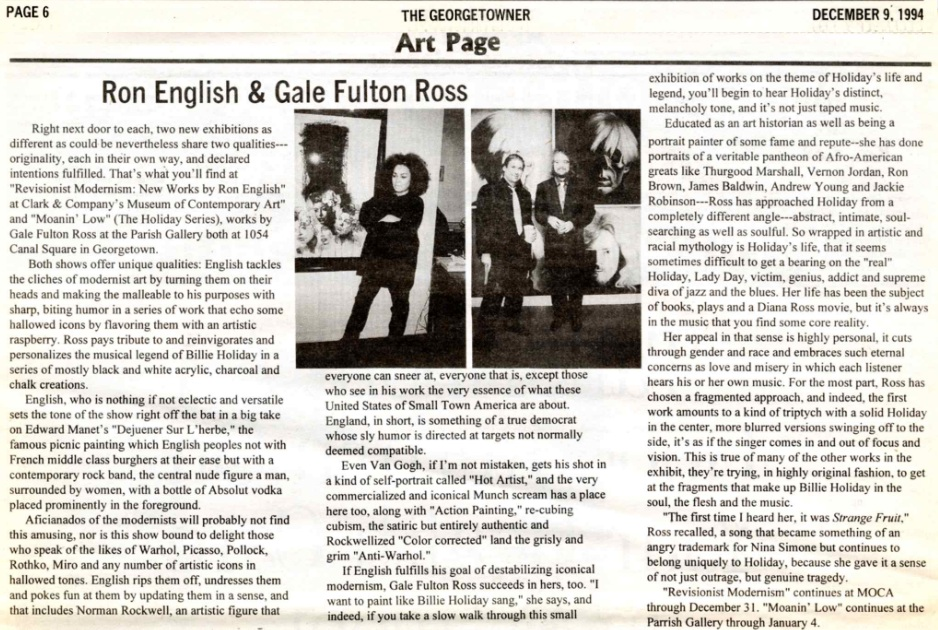
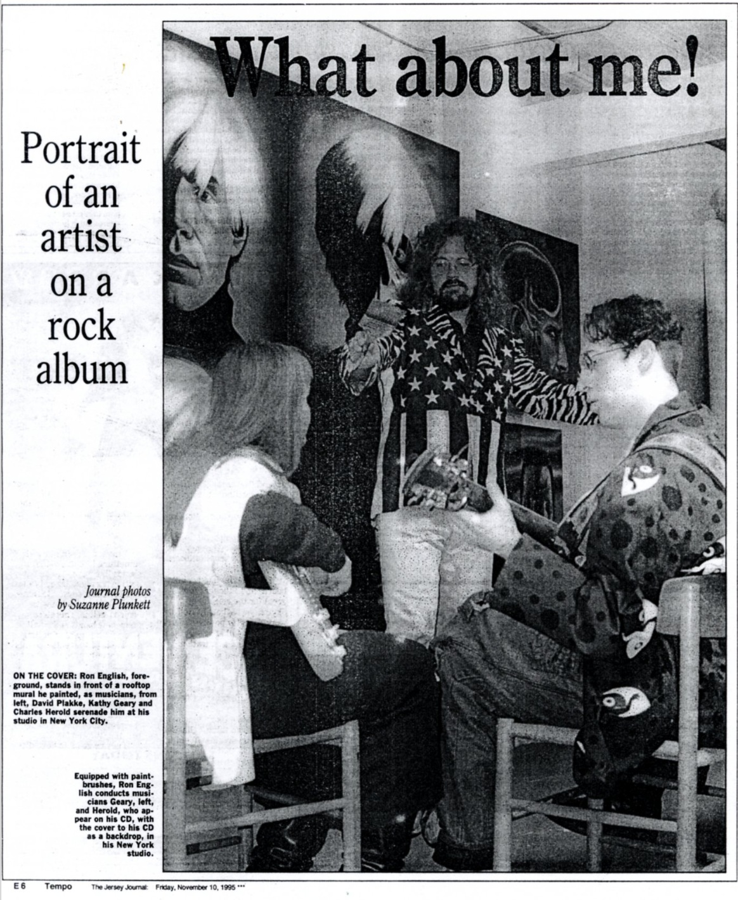
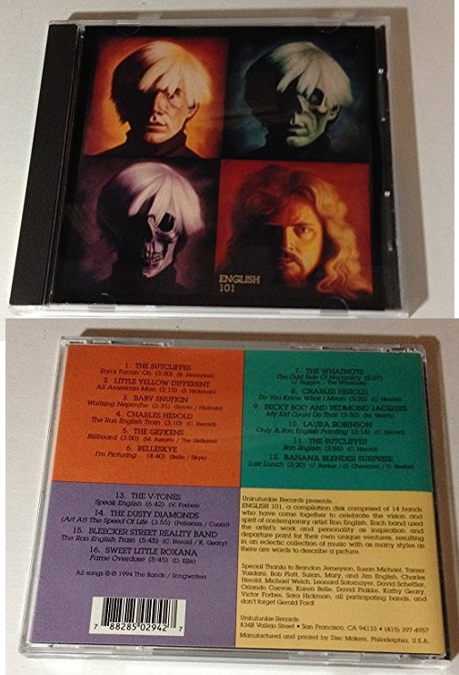

Exhibitions
Revisionist Modernism, The Museum of Contemporary Art, Washington, DC, US, December 2, 1994–January 1, 1995.
Literature
“Ron English & Gale Fulton Ross,” The Georgetowner, Art Page, December 9, 1994, p. 6.
Suzanne Plunkett, “Portrait of an Artist on a Rock Album,” Tempo, The Jersey Journal, November 10, 1995, p. E6.
Ron English, Popaganda: The Art & Subversion of Ron English (San Francisco: Last Gasp, 2001). Panel 1 reproduced on the front cover; all four panels illustrated on p. 131. ISBN 1-887128-60-3.
Notes
This work consists of four individual panels, catalogued as RE-000196-A, RE-000196-B, RE-000196-C, and RE-000196-D.
The composition references Andy Warhol’s Self-Portrait (1966).
Ancillary Documentation





Additional Online Circulation
Selected examples of the work’s online circulation, reproduction, or discussion. This list is not exhaustive; it is intended to document representative appearances of the image beyond formal exhibition and publication records.